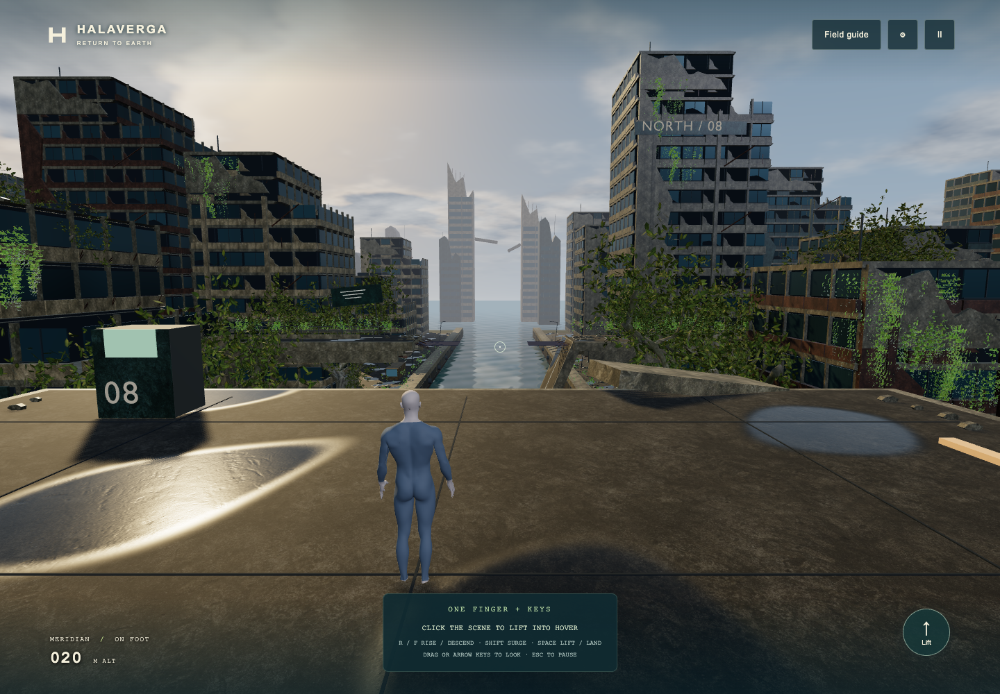
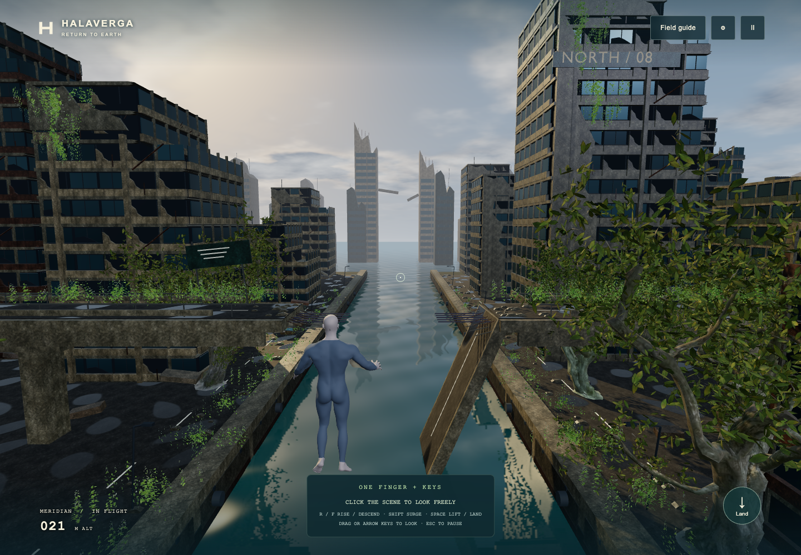
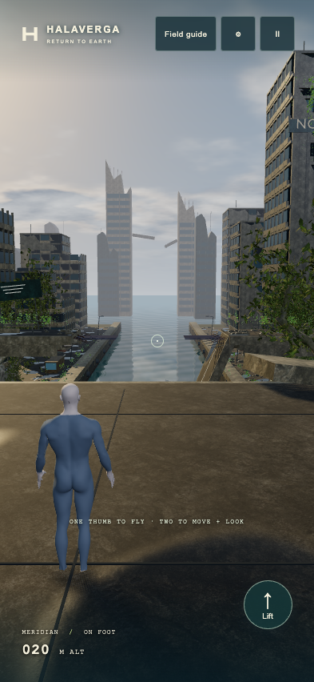

Blender-authored ruined architecture, torn concrete façades, recessed interiors, structural steel, rooftop equipment and a fractured skyline. Warm light, cooler shadows, wet surfaces and reflections bring the canal back into the scene.

Blender pass · actual game capture · desktop Chrome

The viaduct approach. Existing flight routes and collision envelopes are retained.
393 × 852 viewport in desktop Chrome. Physical iPhone testing is still required.